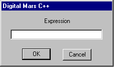

Home
| Search
| CTG
| RTL
| IDDE
| STL
Home
| Search
| CTG
| RTL
| IDDE
| STL
Last update Fri Apr 28 16:30:17 2006
|
Reference 1. Introducing Digital Mars C++ 2. Introducing the IDDE Part 2: Creating an Application with Digital Mars C++ 3. Starting a Project and Defining Workspaces 4. Generating an Application Framework 5. Defining Classes and Their Hierarchies 6. Editing Program Code 7. Adding Look and Feel with Resources 8. Testing an Application Part 3: Learning Digital Mars C++ by Example 9. Introduction to the Tutorial 10. Lesson 1: Create the DOS Application 11. Lesson 2: Generate an Application Framework 12. Lesson 3: Customize the Interface 13. Lesson 4: Add Messages with ClassExpress 14. Lesson 5: Add a Dialog Box with ClassExpress Part 4: More about Creating Programs 15. More about Projects and Workspaces 16. More about Project Build Settings 17. More about AppExpress 18. More about ClassExpress 19. Class Editor Reference 20. Hierarchy Editor Reference 21. Text Editor Reference 22. Using Version Control Part 5: More about Testing Programs 23. Controlling and Configuring the Debugger 24. Commands Available in Debugging Mode Part 6: About Managing Resources 25. ResourceStudio Resource Editor 26. Dialog Editor 27. Menu, Accelerator and String Table Editors 28. Bitmap, Cursor, Icon, and Font Editors 29. Version Information and Custom Resource Editors Part 7: Appendixes A. Expression Evaluation B. IDDE Settings and Command-Line Options C. Using NetBuild |
A. Expression EvaluationAn expression comprises operands and operators, such as constants, variables, and functions. You can specify variables and functions using their symbolic names defined in your program. Digital Mars C++ supports standard language operators. This manual does not provide a complete discussion of language expressions.Entering ExpressionsThe following IDDE operations prompt you to enter an expression:
 Figure A-1 Expression dialog box Symbols and Their ScopeA symbol is the name of a variable, procedure, module, or enumerated symbol in your program. You declare symbols in the scope of a procedure or module. When you use a symbol in an expression, the debugger determines its scope based on the module, procedure, and line where the current instruction is located.The IDDE expression evaluator tries to match an entered symbol against:
Scope overrideYou can override the current scope where the debugger looks for a symbol by qualifying the symbol with a module or a procedure name. To override the current scope, use the syntax:[ModuleName.][ProcName.] SymbolNameThe debugger looks for the symbol SymbolName in the procedure ProcName declared in the module ModuleName. For example, if you enter: InOut.WriteString.ithe debugger tries to find the symbol i in the scope of the procedure WriteString declared in the module InOut. If you do not include the module name, the debugger uses the current module (the module containing the current instruction). For example, if you enter: WriteString.ithe debugger tries to find the symbol i in the scope of the procedure WriteString declared in the module displayed in the Source window. If you specify a module name but not a procedure name, the debugger uses the global scope of the module specified. For example, if you enter: InOut.ithe debugger tries to find the symbol i in the global scope of the module InOut. Register symbolsTo evaluate processor register values, use the symbols listed in the following tables:Table A-1 Processor registers, 16-bit Symbol Register AX or ax AX BX or bx BX CX or cx CX DX or dx DX SI or si SI DI or di DI SS or ss SS DS or ds DS CS or cs CS ES or es ES SP or sp SP BP or bp BP IP or ip IP _F or _f Flags FS FS available only when debugging in 32-bit mode GS GS available only when debugging in 32-bit mode Table A-2 Processor registers, 32-bit (available only when debugging in 32-bit mode) Symbol Register EAX or eax EAX EBX or ebx EBX ECX or ecx ECX EDX or edx EDX ESI or esi ESI EDI or edi EDI ESP or esp ESP EBP or ebp EBP EIP or eip EIP Table A-3 Floating point stack registers Symbol Floating point stack FP0 or fp0 ST(0) FP1 or fp1 ST(1) FP2 or fp2 ST(2) FP3 or fp3 ST(3) FP4 or fp4 ST(4) FP5 or fp5 ST(5) FP6 or fp6 ST(6) FP7 or fp7 ST(7) OperatorsThe IDDE supports standard C and C++ operators in expressions. These operators, described in the following sections, have the same precedence within the debugger's expression evaluator as they do in C and C++.In addition to the standard operators in C and C++, the IDDE supports the colon operator (:). The colon operator joins a segment:offset pair of unsigned integers to specify an address value. This operator has the same priority as the unary operators. The IDDE supports the standard C and C++ operators listed below, in descending order of precedence: Primary() [] -> . this :: Unary* & -! ~ ++ --sizeof Binary.* ->* * / % + - >> << > < >= <= == != & ^ | && || Assignment= += -= *= /= %= >>= <<= &= ^= |=C expressions in the IDDE also may include typecasts of the form: (type-name) expressionFor C++, the above typecast is valid only for built-in types. Because the debugging information does not associate line numbers with local scopes, the IDDE cannot distinguish variables declared in a local scope. For example, in line 7 of the following source code:
1 int i;
2 proc()
3 {
4 int i;
5 if (i){
6 int i;
7 i= 5;
8 }
9 }
The intent is for the variable i in i = 5 to refer to
the i in line 6, but
the IDDE will associate it with the i in line 4.
Considerations When Using C++ ExpressionsThis section describes considerations for working with the IDDE expression evaluator and C++ expressions.The expression evaluator generally expects the same syntax as the compiler. Access to class membersAll members of a class object are accessible, no matter which type of access control is imposed (public, protected, or private), or if the object is a member of a base class (embedded object).For example, if class Customer has a private member name, enter the following into the IDDE expression evaluator: Customer::nameThe expression evaluator provides the value of name in an output dialog box. You also can access members of an object using a pointer to the object. For example, if the Salesperson class defines a virtual function named totalSales, redefined in the class inherited from Salesperson, totalSales can be called using a pointer to Salesperson: salePtr->totalSales() Ambiguous referencesWhen an expression makes an ambiguous reference to a member name, qualify it with the class name. For example, the class Resistor is defined as follows:
1 class Parts
2 {
3 unsigned int specs;
4 } resistorParts;
5
6 class Components
7 {
8 unsigned int specs;
9 } resistorComponents;
10
11 class Resistor:
12 public Parts, public Components;
13 {
14 int name;
15 } resistor;
16 ...
Assume that class Resistor inherits from the Parts and
Components classes. Both Parts and Components define a
member item called specs. If largeResistor is an instance of
class Resistor, the following expression is ambiguous:
largeResistor.specsTo resolve this problem, use either of the following expressions:
Constructors and destructorsThe IDDE expression evaluator calls constructor or destructor functions just as it calls normal functions. Functions that declare or return local objects are valid expressions, and they return the address of the resulting object.Note: The IDDE expression evaluator does not let you call the new and delete operators. Overloaded functionsThe IDDE expression evaluator supports calling overloaded functions only if an exact match exists or if the match does not need a conversion involving the construction of an object. For example, the overloaded function Print is defined as below:
1 Print( int x)
2 {
3 ...
4 }
5
6 Print( float y)
7 {
8 ...
9 }
In this case, both of the following expressions for the IDDE
expression evaluator are valid:
Overloaded operatorsIDDE's expression evaluator lets you call an overloaded operator for user-defined types. For example, suppose you define a class that represents arrays as follows:class Array array1, array2, array3, array4If this class has a member function that overloads the + operator, then you can evaluate the following: array1 = array2 + array3 + array4Make sure that no variables overflow during evaluation. The expression evaluator automatically creates temporary objects as needed to store the intermediate values and discards them after it performs the evaluation. Function and Procedure CallsThe IDDE lets you execute function and procedure calls defined in your program when evaluating an expression. Use this feature to:
procedureName([param1[, param2]...])You can specify the procedure parameters as expressions. The IDDE passes all parameters by value. Evaluating expressions with function callsThe IDDE evaluates expressions, except for function and procedure calls, by interpretation. When the interpreter encounters a function call, it saves the application's registers and pushes its own evaluation stack onto the application program's stack. Next, the debugger orders the application to begin executing at the function's entry point. If the Flip Screen command is on, the application's screen comes to the foreground. When the application's procedure returns, the debugger takes control and restores the application's register state. During the evaluation of a procedure or a function, the debugger ignores breakpoints and watchpoints. It takes the return value and continues evaluating the expression, if necessary.Side effects of expression evaluationWhen including function or procedure calls in the IDDE expressions, beware of possible side effects caused when you evaluate a function that results in changes to your program's data. Such changes could alter the behavior of your program after it resumes execution.Expression Evaluation ErrorsThe IDDE normally evaluates an expression and displays the result after you press Enter. However, with the Set Conditional Breakpoint command, the IDDE does not evaluate an expression until it reaches the breakpoint. If a run-time error occurs during the evaluation of a conditional breakpoint expression, the IDDE assumes that the expression is false and does not display an error message.
When the IDDE finds a syntax or semantic error in an expression, it
displays the error message in the title bar of the debugger's main
window.
|